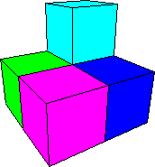

| As with the other constructions, here we use only configurations with outward pointing snap on the
bottom, left, or right face of the corner cube. Here is one recipe. |
| |
| Begin with 25 stage one configurations, seven with outward pointing snap on the bottom, seven with outward pointing
snap on the left, and eleven with outward pointing snap on the right. |
|  | |
 |
|
| A stage two configuration with outward pointing snap on the bottom is made from five stage one configurations,
two with outward pointing snap on the bottom, one on the left and two on the right. Build two of these. |
| A stage two configuration with outward pointing snap on the left is made from five stage one configurations,
three with outward pointing snap on the left, one on the bottom and one on the right. Build one of these. |
| A stage two configuration with outward pointing snap on the right is made from five stage one configurations,
three with outward pointing snap on the right, one on the bottom and one on the left. Build two of these. |
|
| These five are assembled into a stage three configuration with outward pointing snap on the bottom. |
|
|
|
|